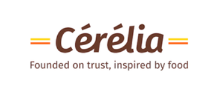
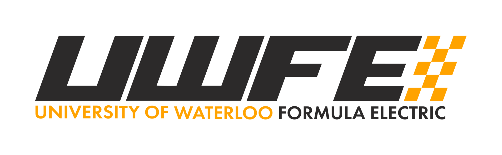
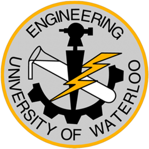

Khajani
Sivapala
Mechatronics Engineering
University of Waterloo
CURRENT POSITION
Tesla
Automation Engineering Intern
Mechatronics Engineering
University of Waterloo
CURRENT POSITION
Tesla
Automation Engineering Intern
01 / EXPERIENCE





02 / PROJECTS
Click any project to open its photos and videos.

Feb 2026
#1 Best ExecutionEmbedded SystemsSensor FusionIoTC++ FirmwareAlert Logic
Integrated IMU, magnetometer, temperature/humidity, IR, and touch sensors into one hazard score, detecting 7/7 simulated hazards. A two-layer alert logic sends a 3 g+ crash to a critical LCD and buzzer warning in about 3 s. Non-blocking C++ firmware streams 8 channels every 5 s to off-site responders.
Photos & videos ↗ Code on GitHub

Jun 2025 – Aug 2025
BiomechatronicsWearable SensingHMIArduinoServo ControlTendon-Driven
Independently built a teleoperated robotic hand with custom flex-sensor mapping that mirrors operator gestures at 90% accuracy and under 500 ms delay. Designed the servo-actuated, tendon-driven finger mechanism through 4+ iterative prototypes.
Photos & videos ↗ Code on GitHub

Nov 2024
Assistive TechnologyRapid PrototypingMotion ControlLEGO EV3Encoder Feedback
Developed a 3-axis assistive braille printer that converts text files to tactile braille for children, versus $2K+ commercial embossers. Achieved 95% dot accuracy at 2.5 mm pitch using 1° encoder control and row-by-row printing.
Photos & videos ↗ Code on GitHub

Canadian Nuclear Laboratories Innovation Challenge
Embedded SystemsIoT TelemetryArduino Uno R4 WiFiSensorsSafety Monitoring
Built real-time monitoring for nuclear waste transport using an Arduino Uno R4 WiFi and sensors, sending live telemetry to ThingSpeak and simulating radiation and fire detection with IR sensors.
Photos & videos ↗ Code on GitHub

Toyota Mechanical Innovation Challenge
Mechanical DesignSolidWorks3D PrintingDC Motors & ServosSensors
Designed an automated guided vehicle for dual-mode door and box transport with safe warehouse navigation. Modeled and 3D-printed custom grippers in SolidWorks, and built a lift system with Tetrix, DC motors, servos, a PS4 controller, and sensors.
Photos & videos ↗ Code on GitHub

UW Formula Electric
Carbon Fiber CompositesChassisMachiningAdhesive TestingTeam Project
Developed a carbon fiber layup by spraying adhesive onto foam and carbon fiber for the undertray core, and machined steel chassis components to tight tolerances.
Photos & videos ↗